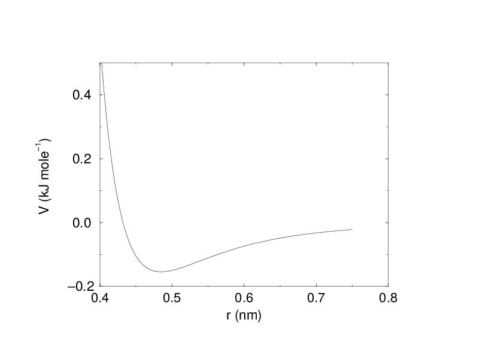
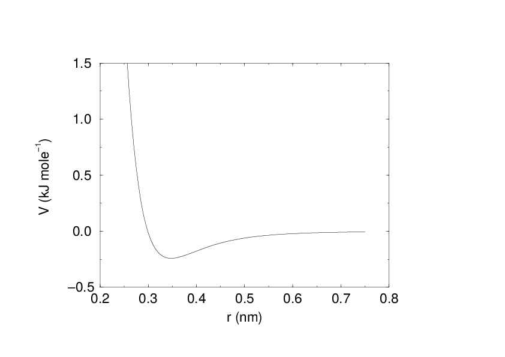
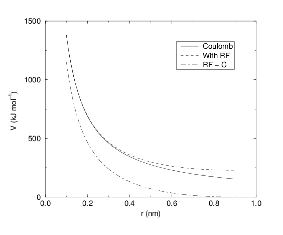

Non-bonded interactions¶
Non-bonded interactions in GROMACS are pair-additive:
Since the potential only depends on the scalar distance, interactions will be centro-symmetric, i.e. the vectorial partial force on particle \(i\) from the pairwise interaction \(V_{ij}(r_{ij})\) has the opposite direction of the partial force on particle \(j\). For efficiency reasons, interactions are calculated by loops over interactions and updating both partial forces rather than summing one complete nonbonded force at a time. The non-bonded interactions contain a repulsion term, a dispersion term, and a Coulomb term. The repulsion and dispersion term are combined in either the Lennard-Jones (or 6-12 interaction), or the Buckingham (or exp-6 potential). In addition, (partially) charged atoms act through the Coulomb term.
The Lennard-Jones interaction¶
The Lennard-Jones potential \(V_{LJ}\) between two atoms equals:
See also Fig. 16 The parameters \(C^{(12)}_{ij}\) and \(C^{(6)}_{ij}\) depend on pairs of atom types; consequently they are taken from a matrix of LJ-parameters. In the Verlet cut-off scheme, the potential is shifted by a constant such that it is zero at the cut-off distance.


Fig. 16 The Lennard-Jones interaction.¶
The force derived from this potential is:
The LJ potential may also be written in the following form:
In constructing the parameter matrix for the non-bonded LJ-parameters, two types of combination rules can be used within GROMACS, only geometric averages (type 1 in the input section of the force-field file):
or, alternatively the Lorentz-Berthelot rules can be used. An arithmetic average is used to calculate \(\sigma_{ij}\), while a geometric average is used to calculate \(\epsilon_{ij}\) (type 2):
finally an geometric average for both parameters can be used (type 3):
This last rule is used by the OPLS force field.
Buckingham potential¶
The Buckingham potential has a more flexible and realistic repulsion term than the Lennard-Jones interaction, but is also more expensive to compute. Note that the Buckingham potential is no longer supported by gmx mdrun. The potential form is:


Fig. 17 The Buckingham interaction.¶
See also Fig. 17. The force derived from this is:
Coulomb interaction¶
The Coulomb interaction between two charge particles is given by:
See also Fig. 18, where \(f = \frac{1}{4\pi \varepsilon_0} = {138.935\,458}\) (see chapter Definitions and Units)


Fig. 18 The Coulomb interaction (for particles with equal signed charge) with and without reaction field. In the latter case \({\varepsilon_r}\) was 1, \({\varepsilon_{rf}}\) was 78, and \(r_c\) was 0.9 nm. The dot-dashed line is the same as the dashed line, except for a constant.¶
The force derived from this potential is:
A plain Coulomb interaction should only be used without cut-off or when all pairs fall within the cut-off, since there is an abrupt, large change in the force at the cut-off. In case you do want to use a cut-off, the potential can be shifted by a constant to make the potential the integral of the force. With the group cut-off scheme, this shift is only applied to non-excluded pairs. With the Verlet cut-off scheme, the shift is also applied to excluded pairs and self interactions, which makes the potential equivalent to a reaction field with \({\varepsilon_{rf}}=1\) (see below).
In GROMACS the relative dielectric constant \({\varepsilon_r}\) may be set in the in the input for grompp.
Coulomb interaction with reaction field¶
The Coulomb interaction can be modified for homogeneous systems by assuming a constant dielectric environment beyond the cut-off \(r_c\) with a dielectric constant of \({\varepsilon_{rf}}\). The interaction then reads:
in which the constant expression on the right makes the potential zero at the cut-off \(r_c\). For charged cut-off spheres this corresponds to neutralization with a homogeneous background charge. We can rewrite (152) for simplicity as
with
For large \({\varepsilon_{rf}}\) the \(k_{rf}\) goes to \(r_c^{-3}/2\), while for \({\varepsilon_{rf}}\) = \({\varepsilon_r}\) the correction vanishes. In Fig. 18 the modified interaction is plotted, and it is clear that the derivative with respect to \({r_{ij}}\) (= -force) goes to zero at the cut-off distance. The force derived from this potential reads:
The reaction-field correction should also be applied to all excluded atoms pairs, including self interactions, in which case the normal Coulomb term in (152) and (156) is absent. For the self interactions the constant is halved, leading to this constant potential term:
Modified non-bonded interactions¶
All physical forces are conservative, meaning that it is possible to assign a numerical value for the potential at any point (which thus does not depend on the path taken), and the force is the negative gradient of this potential. Based on the definitions of the potentials above, this derivative (i.e., the force) is always zero at infinite separation, and in the context of pair potentials this means the potential for each pair contribution must be the integral of the force out from infinity back to the current interaction distance. While it is perfectly valid to have an arbitrary constant factor in the potential, a natural choice is to define the pair interaction to be zero at infinite separation when particles are not really interacting. However, when these definitions using infinite-range potentials are combined with a cutoff for pair interactions we violate their consistency, and the force would no longer be conservative - which in particular means the total energy will no longer be conserved. One way to circumvent this is to instead modify the non-bonded interaction potentials such that they only have finite range, after which the cutoff can be applied. This can either be done as a switching function that changes the shape of the potential and force over a small range, or by shifting the entire potential by a constant factor such that it becomes zero at the cutoff. The advantage of the shifted interaction modification is that it does not influence the force at all, and since only forces enter the equations of motion it will not influence the dynamics of the system. The drawback is that the total change in the potential is larger. Presently GROMACS only supports this shifted modification, and it is even applied by default (but possible to turn off). Note that we also shift the direct-space component of the PME interaction; the potential difference will be negligible since it has already decayed to the specified PME tolerance at the cutoff, but this improves energy conservation.
When used with reaction-field electrostatics ((152)), the self-energy term will effectively make the electrostatic potential constant (but non-zero) outside the cutoff.
For implementation reasons, GROMACS presently uses the reaction-field kernel for normal Coulomb interactions too (with \({\varepsilon_{rf}}={\varepsilon_{r}}\)). Note that this will give the appearance of a similar constant potential outside the cutoff for plain Coulomb electrostatics too. We will try to fix this in a future kernel, but since there are very few (if any) cases where plain Coulomb is a good choice for electrostatics it has not been a high priority.
Although the present kernels only support shifting the potential, we do plan to bring back complete functionality for switch functions, so for completeness in the interface we have retained that documentation below.
While the shift modifier will yield conservative forces, the forces will still have an abrupt change at the cutoff, which among other things can make it difficult to efficiently minimize the energy of a system prior to normal mode calculation. The force-switch function replaces the truncated forces by forces that are continuous and have continuous derivatives at the cut-off radius. With such forces the time integration produces smaller errors, although for Lennard-Jones interactions other errors tend to dominate, such as integration errors at the repulsive part of the potential. For Coulomb interactions we advise against using switch modifiers since it can lead to large peaks in the force close to the cutoff; we strongly recommend considering reaction-field or a proper long-range method such as PME instead.
We apply the switch function to the force \(F(r)\) describing either the electrostatic or van der Waals force acting on particle \(i\) by particle \(j\) as:
For pure Coulomb or Lennard-Jones interactions \(F(r) = F_\alpha(r) = \alpha \, r^{-(\alpha+1)}\). The switched force \(F_s(r)\) can generally be written as:
When \(r_1=0\) this is a traditional shift function, otherwise it acts as a switch function. The corresponding shifted potential function then reads:
The GROMACS force switch function \(S_F(r)\) should be smooth at the boundaries, therefore the following boundary conditions are imposed on the switch function:
A 3\(^{rd}\) degree polynomial of the form
fulfills these requirements. The constants A and B are given by the boundary condition at \(r_c\):
Thus the total force function is:
and the potential function reads:
where
The GROMACS potential-switch function \(S_V(r)\) scales the potential between \(r_1\) and \(r_c\), and has similar boundary conditions, intended to produce smoothly-varying potential and forces:
The fifth-degree polynomial that has these properties is
This implementation is found in several other simulation packages,7375 but differs from that in CHARMM.76 Switching the potential leads to artificially large forces in the switching region, therefore it is not recommended to switch Coulomb interactions using this function,72 but switching Lennard-Jones interactions using this function produces acceptable results.
Modified short-range interactions with Ewald summation¶
When Ewald summation or particle-mesh Ewald is used to calculate the long-range interactions, the short-range Coulomb potential must also be modified. Here the potential is switched to (nearly) zero at the cut-off, instead of the force. In this case the short range potential is given by:
where \(\beta\) is a parameter that determines the relative weight between the direct space sum and the reciprocal space sum and erfc\((x)\) is the complementary error function. Note that GROMACS by default shifts this potential by a constant to ensure that the potential is zero at the cut-off. For further details on long-range electrostatics, see sec. Long Range Electrostatics.